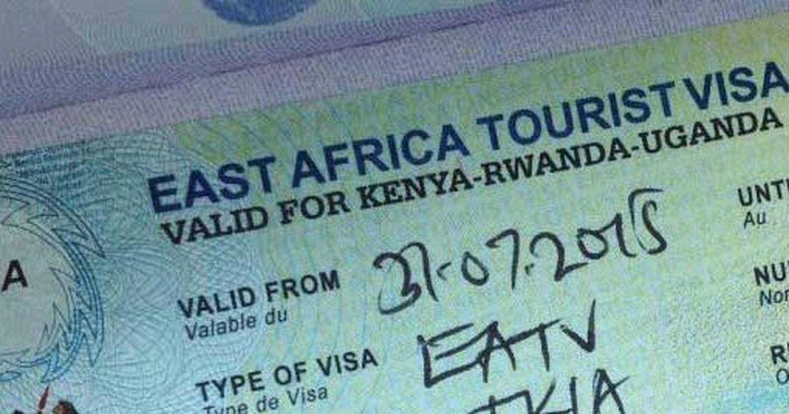

Photograph: Onyango George / EA Hospitality Pulse
East Africa renewed its brand for another ten years. The visa that would make it one destination is still a study.
EAC tourism ministers adopted a ten-year marketing strategy in Arusha last Thursday under a slogan the region already had. The single tourist visa that would let an operator actually sell the region got two more deadlines and no decision.
Four days of meetings at the East African Community headquarters in Arusha ended last Thursday with a document and a slogan. The 13th Sectoral Council on Tourism and Wildlife Management, chaired by Uganda's minister for tourism, wildlife and antiquities, Col Tom Butime, adopted the EAC Tourism Marketing Strategy for 2027 to 2036: a ten-year framework to sell eight partner states to the world as a single destination, using digital campaigns, strategic partnerships and cross-border tour packages under the banner "Visit East Africa: Feel the Vibe."
An operator reading the communiqué would be forgiven for a moment of déjà vu. The slogan is not new. The Community's own tourism marketing page carries "Visit East Africa, Feel the Vibe" as the existing regional brand, complete with a brand manual and a brand communication and promotion plan whose own filename dates it to 2023. Nor is the strategy new in kind. The page lists an EAC Tourism Marketing Strategy for 2021 to 2025, with a successor expected to conclude in 2026. What happened in Arusha last week, stripped of the ribbon, is that a marketing strategy which had expired was replaced by another one, under the same brand, for twice the duration.
What was not renewed, again, is the thing that would let anyone sell the product the brand describes.
The single tourist visa was on the agenda, and it left Arusha in the condition it has occupied for most of a decade. The Secretariat was directed to circulate an updated study on it by 20 October, two days ago. Partner states were asked to submit comments by 30 November. Andrea Aguer Ariik Malueth, the EAC's deputy secretary general for infrastructure, productive, social and political sectors, urged member states to conclude their national consultations, without a date attached. That is the entire decision. A study circulates, comments arrive, consultations continue.
The East Africa Tourist Visa those documents concern already exists. It costs US$100, runs for 90 days, and covers Kenya, Uganda and Rwanda. It does not cover Tanzania, Burundi or South Sudan, which means it covers three of the eight states the new ten-year strategy will market as one place. For the itinerary most long-haul buyers actually want, a week of Kenyan plains and a week in the Serengeti or on Zanzibar, the visa does not hold. A traveller pays the US$100 for the three-country bloc, then pays again for a Tanzanian entry, from US$50 for a single-entry e-visa, and crossing into Tanzania ends the bloc visa's validity, so returning north is a fresh transaction. The region's single-destination promise currently costs a visitor two visas and the loss of one of them.
This is not a marketing problem, and the people in the room said as much. Malueth told the council that the benefits the region has drawn from tourism so far were "only the tip of the iceberg", and that "the world will judge East Africa by the quality of the rooms, the meals and the service that our visitors receive." Suleiman Masoud Makame, Zanzibar's minister for agriculture, irrigation, natural resources and livestock, opened the meeting with the same thought in plainer form, saying tourism success depends not only on the region's attractions but also on service quality. Butime's own framing was about capital, not campaigns: "We need to create an enabling environment for private-sector investment, develop bankable regional tourism projects."
Three senior figures diagnosed supply, pricing and product. The council adopted a slogan and a decade.
That is less unfair than it sounds, because the council did decide several concrete things, and they are worth more to a hotelier than the brand is. Ministers adopted common designs for EAC tourism classification plaques and certificates, agreed that classified establishments will be published in the EAC Gazette, and signed off on examination results for newly trained classification assessors from Kenya and Tanzania. Partner states were urged to accelerate classification of tourism establishments before the 2027 Africa Cup of Nations. The Secretariat was told to coordinate a tripartite memorandum between Kenya, South Sudan and Uganda for the Kidepo, Karamoja and Turkana transboundary conservation area. Uganda offered to host the fourth EAC Regional Tourism Expo alongside the Pearl of Africa Tourism Expo in May 2027, with AFCON promotion and multi-country packages attached.
The classification decisions are the sleeper item. A gazetted regional grade, carried on a plaque a European buyer can recognise across borders, is the first genuinely new asset East African accommodation has been handed in years, and it is the one piece of last week's agenda that converts directly into a line on a contract rate sheet. It also has a hole in it. Assessors were certified for Kenya and Tanzania. A harmonised grade is only worth what its least-staffed member state can issue, and six partner states were not on that list.
The expo offer illustrates the gap between adoption and delivery more neatly than any critic could. The Community's own page describes the regional tourism expo as an annual event that rotates among partner states, and lists three editions: Tanzania, then Burundi, then Kenya in 2023. The fourth is now scheduled for May 2027. An annual expo with a four-year gap in it is the implementation record against which a ten-year marketing strategy should be read.
The underlying numbers argue for a different priority than the brand does. On the Community's own barometer data, EAC tourism receipts reached US$7.7 billion in 2023, up almost 31 per cent on the previous year, with the region's total receipts running above pre-pandemic levels. More tellingly, visitors from within the region accounted for about 40 per cent of EAC arrivals in 2023, against 33.2 per cent in 2019. The share rose through the pandemic years and has not gone back. The customer who has been growing fastest is already inside the bloc, travelling between its capitals, and is the customer least served by a long-haul campaign and most punished by the cost of moving around.
Which brings in the file that was not on last Thursday's agenda at all. Air connectivity between the region's gateways sits with transport ministers, not tourism ones, and it is where the single-destination promise is priced. Kenya's travel agents have long argued that Nairobi to Entebbe, Nairobi to Kigali and Nairobi to Dar es Salaam rank among the most expensive routes per seat anywhere, with regulatory charges a large share of the fare, and that only a handful of regional states have joined the Single African Air Transport Market. The African Development Bank has estimated that high ticket prices deter close to 30 per cent of prospective passengers in the region. Those figures circulate widely in regional advocacy and should be treated as indicative rather than audited. The direction of them is not in dispute by anyone selling a two-country itinerary.
The trade's own reading of regional integration has been consistently cooler than the ministerial one. Joseph Kithitu, chairperson of the Kenya Association of Travel Agents, told Tourism Update in August that marketing East Africa as one destination "would be a game changer for the region's tourism industry", then named the constraint in the same breath: "each destination also wants to protect and promote its own brand." Bainito Musumba, sales manager at Private Safaris, was blunter. "I think any joint venture is still a very long distance away," he said. "Historically, we don't trust each other, especially Kenya."
That is the honest state of the thing. National tourism boards run separate budgets, separate campaigns and separate arrival targets, and a regional brand sits on top of them without authority over any of it. No account of last week's meeting carried a budget figure for the ten-year strategy. The Secretariat thanked GIZ, the European Union, TradeMark Africa, IUCN and the Regional Centre for Mapping of Resources for Development for continued support, with no amounts stated. A marketing strategy with an unnamed budget, administered by a secretariat with no spending power over national boards, is a coordination document, and it should be planned against as one.
The deadline makes all of this urgent in a way the previous decade's versions were not. The 2027 Africa Cup of Nations, co-hosted by Kenya, Uganda and Tanzania, runs from 19 June to 17 July 2027. It is the first time the region will handle a genuinely multi-country influx of visitors on a fixed date, and it is the one occasion on which the single-destination claim will be tested by people rather than brochures. A fan flying into Nairobi for a group match and on to Dar es Salaam for a quarter-final will discover, at the counter, exactly how many visas East Africa sells.
For an operator budgeting the next eighteen months, the practical reading of Arusha is narrow and useful. Do not build a 2027 product on the single tourist visa: its next milestone is a comment deadline, not a launch, and no partner state has committed to a date. Price the visa friction into multi-country itineraries now, explicitly, as a line the client sees, because the alternative is absorbing it at the point of sale. Treat classification as the real opportunity and get into the national exercise early enough to carry a gazetted regional plaque into the 2027 contracting round, while remembering that your plaque is only as good as the assessor capacity behind it. Build cross-border product bilaterally, with partners whose borders and fares you can actually test, rather than waiting for a regional package to arrive from a secretariat. And treat the campaign as free upside on top of your own channel, never as a substitute for it.
The brand was renewed last Thursday for ten years. The transaction was renewed for six weeks, until 30 November, when the comments come in.
📣 Telegram 💬 WhatsApp 💼 LinkedIn 📚 All guides